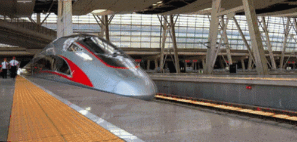
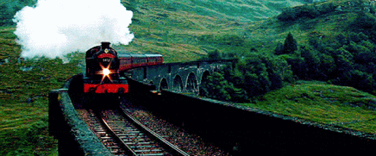
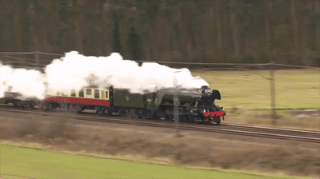

This new high-speed train connects major cities in Florida, such as Orlando and Miami, making travel across the state faster and more convenient. It includes stops at key locations like West Palm Beach and Fort Lauderdale. Brightline is known for its sleek design, modern amenities, and eco-friendly travel options
TRAVEL + LEISURE
.

Indonesia introduced its first high-speed train, Whoosh, in 2023. This train connects Jakarta and Bandung, reducing travel time from three hours to under an hour, with speeds reaching up to 215 mph. It’s a significant development in Indonesia’s rail infrastructure
Scheduled for 2024, the next-generation Acela trains will operate along the Northeast Corridor. These high-speed trains are designed for comfort and sustainability, with features like touchless services, more seating capacity, and the ability to travel at speeds up to 160 mph. This upgrade will enhance travel between cities like Washington, D.C., and Boston

1. The Orient Express
Era: Late 19th to early 20th century
Route: Originally from Paris to Istanbul, spanning across Europe
Significance: Known as one of the world's most luxurious and glamorous trains, the Orient Express was famed for its opulent interiors, exquisite dining, and mysterious allure. It attracted aristocrats, royalty, and affluent travelers, becoming a symbol of international luxury travel.
Legacy: The Orient Express influenced literature and film, most notably in Agatha Christie's Murder on the Orient Express. Today, luxury journeys inspired by the original train are offered under the Venice-Simplon Orient Express brand.
2. Shinkansen (Bullet Train)
Era: First launched in 1964; continuous evolution with new models like the N700 series
Route: Covers most of Japan, with notable routes like Tokyo to Osaka
Significance: Japan’s Shinkansen was the world’s first high-speed rail system, revolutionizing train travel by reaching speeds of 130 mph initially, and later, models reached over 200 mph. Its precision and punctuality make it an international benchmark for high-speed rail.
Legacy: The Shinkansen remains a symbol of Japanese efficiency and technological innovation. The Shinkansen experience, characterized by smooth rides and high-tech design, is integral to Japanese domestic and international travel.

3. Flying Scotsman
Era: Built in 1923; operational in various forms since then
Route: Originally ran from London to Edinburgh
Significance: The Flying Scotsman became famous as one of the first trains to reach 100 mph in the UK and for its luxurious service connecting London and Edinburgh. Known for its green livery and distinct design, it became a symbol of British engineering.
Legacy: The Flying Scotsman remains one of the most celebrated steam engines, carefully preserved and occasionally making public appearances on heritage lines. It holds a special place in the hearts of train enthusiasts and the history of British rail travel.